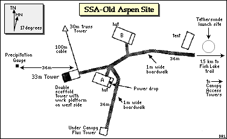
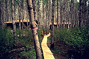
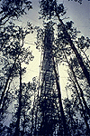
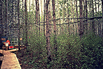
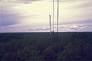
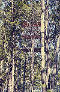
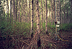
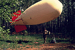

This site is located within the boundaries of Prince Albert Provincial Park, and is accessed by a long trail. It has a large scaffold flux tower (with a truss tower connected by cables), a small 4 meter under canopy flux tower (south of huts), two canopy access towers, a SRC meteorological tower, and a tethered balloon with a radiosonde. View an aerial photo-map of the SSA-OA site.
 Location of the SSA within Canada. |
 Location of the Old Aspen site within the SSA. |
|  Map of the Southern Study Area Old Aspen site. | |
| SSA Old Aspen Flux Tower also called SSA-9OA-FLXTR (click here for detailed info) |
||
| Latitude: 53.62889 | UTM Easting: 420790.5 | BOREAS X: 317.198 |
| Longitude: -106.19779 | UTM Northing: 5942899.9 | BOREAS Y: 303.403 |
| Elevation (ASL): 600.63 m | UTM Zone: 13 | |
|  The two huts and boardwalk |  The scaffold flux tower |
|  The base of the scaffold flux tower |  The truss tower and cables from the flux tower |
|  One of the canopy access towers |  The SRC meteorology tower |
|  The tethersonde about to be launched (tethered balloon and radiosonde) | |
Related Pages:
 BOREAS Home
BOREAS Home
 Study Region Overview
Study Region Overview
 Southern Study Area (SSA)
Southern Study Area (SSA)
 SSA Old Aspen Site (SSA-OA)
SSA Old Aspen Site (SSA-OA)
 NSA Old Aspen Site (NSA-OA)
NSA Old Aspen Site (NSA-OA)
Revison Date: January 25, 1999
{kind=link}
{kind=link}
{kind=link}
{kind=link}
{kind=link}
{kind=link}
{kind=link}
{kind=link}